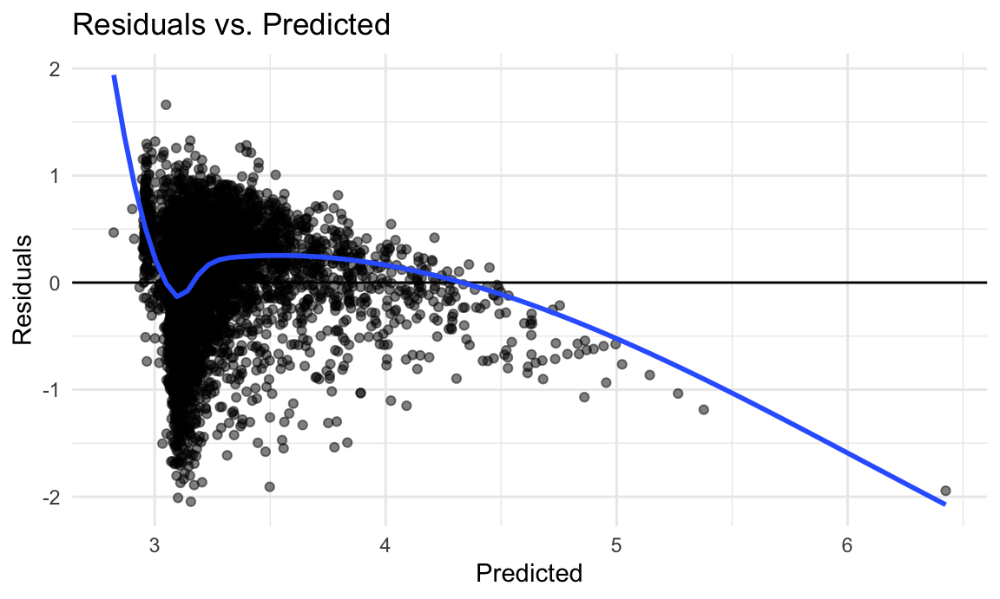

Model Building
library(tidyverse)
library(mgcv)
library(modelr)
library(glmnet)
knitr::opts_chunk$set(
fig.width = 6,
fig.asp = .6,
out.width = "90%"
)
theme_set(theme_minimal() + theme(legend.position = "bottom"))
options(
ggplot2.continuous.colour = "viridis",
ggplot2.continuous.fill = "viridis"
)
scale_colour_discrete = scale_colour_viridis_d
scale_fill_discrete = scale_fill_viridis_d
set.seed(1)
model_movie_df = read.csv("data/letterbox_movie_classification_dataset.csv") |>
janitor::clean_names() |>
filter(original_language == "English") |>
select(average_rating, runtime, watches, list_appearances, likes, fans, lowest, medium, highest, total_ratings)To build off of our regression analysis, we were curious to see what
is the secret recipe to highly rated films. We decided to first fit a
lasso model using glmnet to give us an idea of
what variables impact average rating the most.
x = model.matrix(average_rating ~ ., model_movie_df) [,-1]
y = model_movie_df |> pull(average_rating)
lambda = 10^(seq(-2, 2.75, 0.1))
lasso_fit =
glmnet(x, y, lambda = lambda)
lasso_cv =
cv.glmnet(x, y, lambda = lambda)
lambda_opt = lasso_cv[["lambda.min"]]
lasso_fit_opt = glmnet(x, y, lambda = lambda_opt)
lasso_fit_opt |>
broom::tidy() |>
as.data.frame() |>
knitr::kable()| term | step | estimate | lambda | dev.ratio |
|---|---|---|---|---|
| (Intercept) | 1 | 2.9897371 | 0.01 | 0.3266618 |
| runtime | 1 | 0.0015011 | 0.01 | 0.3266618 |
| list_appearances | 1 | 0.0000054 | 0.01 | 0.3266618 |
| fans | 1 | -0.0000013 | 0.01 | 0.3266618 |
| lowest | 1 | -0.0000353 | 0.01 | 0.3266618 |
| highest | 1 | -0.0000005 | 0.01 | 0.3266618 |
We can see that using lasso, the following predictors
were chosen:
- runtime
- list appearances
- fans
- lowest
- highest
We would like to include total number of watches as well as we think movies that are watched more and exclude lowest and highest (number of lowest ratings and number of highest ratings) as this may be repetitive with the rating variable.
Previously, in our regression analysis we saw that a linear model seems to not be the most effective in modeling the association between average rating and other variables such as runtime, list appearances, total watches, and fans. Using these variables, we will construct different models to identify what will be the most “optimal” model.
First let’s revisit our linear model from earlier.
linear_model = lm(average_rating ~ runtime + list_appearances + watches + fans, data = model_movie_df)
model_movie_df |>
add_predictions(linear_model) |>
add_residuals(linear_model) |>
ggplot(aes(x = pred, y = resid)) +
geom_point(alpha = 0.5) +
geom_hline(yintercept = 0) +
geom_smooth(method = "loess", se = FALSE) +
labs(
title = "Residuals vs. Predicted",
x = "Predicted",
y = "Residuals"
)
linear_model |>
broom::glance() |>
as.data.frame() |>
knitr::kable(digits = 3)| r.squared | adj.r.squared | sigma | statistic | p.value | df | logLik | AIC | BIC | deviance | df.residual | nobs |
|---|---|---|---|---|---|---|---|---|---|---|---|
| 0.191 | 0.19 | 0.471 | 475.125 | 0 | 4 | -5381.935 | 10775.87 | 10817.85 | 1793.061 | 8069 | 8074 |
The linear model has very high AIC/BIC values, and low R². The plot of residuals and predicted values also seems to be very skewed and not approximately evenly distributed around 0. Given this, if a linear model is not the most “optimal” model, what model should be used?
We will use cross validation to test a several different modeling options, and try to identify the one with the smallest RMSE.
cv_df =
crossv_mc(model_movie_df, 100)
cv_df =
cv_df |>
mutate(
train = map(train, as_tibble),
test = map(test, as_tibble))
cv_df =
cv_df |>
mutate(
linear_mod = map(train, \(df) lm(average_rating ~ runtime + list_appearances + watches + fans, data = df)),
smooth_mod = map(train, \(df) gam(average_rating ~ s(runtime) + s(list_appearances) + s(watches) + s(fans), data = df)),
log_level_mod = map(train, \(df) lm(log(average_rating) ~ runtime + list_appearances + watches + fans, data = df)),
glm_mod = map(train, \(df) glm(average_rating ~ runtime + list_appearances + watches + fans, family = gaussian(link = "log"), data = df)),
log_log_mod = map(train, \(df) lm(log(average_rating) ~ log1p(runtime) + log1p(list_appearances) + log1p(watches) + log1p(fans), data = df)),
) |>
mutate(
rmse_linear = map2_dbl(linear_mod, test, \(mod, df) rmse(model = mod, data = df)),
rmse_smooth = map2_dbl(smooth_mod, test, \(mod, df) rmse(model = mod, data = df)),
rmse_log_level = map2_dbl(log_level_mod, test, \(mod, df) rmse(model = mod, data = df)),
rmse_glm = map2_dbl(
glm_mod, test, ~ {preds = predict(.x, newdata = .y, type = "response")
.y |>
mutate(error = average_rating - preds) |>
summarize(rmse = sqrt(mean(error^2))) |>
pull(rmse)}),
rmse_log_log = map2_dbl(log_log_mod, test, \(mod, df) rmse(model = mod, data = df)))
cv_df |>
select(starts_with("rmse")) |>
pivot_longer(
everything(),
names_to = "model",
values_to = "rmse",
names_prefix = "rmse_") |>
mutate(model = fct_inorder(model)) |>
ggplot(aes(x = model, y = rmse)) + geom_violin() +
labs(
title = "Root Mean Squared Error Distributions",
y = "RMSE",
x = "Model"
)
When comparing a linear, smooth, log-level, log-log, and GLM model, we can see that the linear model has the highest RMSE, while the log-log and log_level model have the lowest RMSE.
Let’s look at the residuals and predicted values plot comparing the log-level and log-log models:
log_log_model = lm(log(average_rating) ~ log1p(runtime) + log1p(list_appearances) + log1p(watches) + log1p(fans), data = model_movie_df)
log_level_model = lm(log(average_rating) ~ runtime + list_appearances + watches + fans, data = model_movie_df)
log_log = model_movie_df |>
add_predictions(log_log_model) |>
add_residuals(log_log_model) |>
mutate(model = "Log-Log Model")
log_level = model_movie_df |>
add_predictions(log_level_model) |>
add_residuals(log_level_model) |>
mutate(model = "Log-Level Model")
combined_df <- bind_rows(log_log, log_level)
ggplot(combined_df, aes(pred, resid)) +
geom_point(alpha = 0.5) +
geom_hline(yintercept = 0, color = "red") +
geom_smooth(method = "loess", se = FALSE) +
facet_wrap(~ model) +
labs(
title = "Residuals vs Predicted Across Models",
x = "Predicted",
y = "Residuals"
)
log_log_model |>
broom::tidy() |>
as.data.frame() |>
knitr::kable(digits = 3)| term | estimate | std.error | statistic | p.value |
|---|---|---|---|---|
| (Intercept) | 1.467 | 0.023 | 62.923 | 0 |
| log1p(runtime) | -0.041 | 0.004 | -10.244 | 0 |
| log1p(list_appearances) | 0.064 | 0.004 | 17.896 | 0 |
| log1p(watches) | -0.093 | 0.002 | -43.168 | 0 |
| log1p(fans) | 0.064 | 0.001 | 45.056 | 0 |
From this we can conclude that a log-log model seems to be the best to model the relationship between average rating and runtime, list appearances, total watches, and fans.
*Of note: we used a log(1+p) instead of just log(p) as some 0 values would become null once we log-ed it.